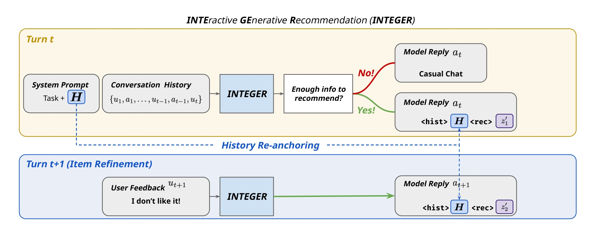
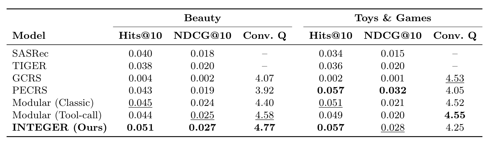
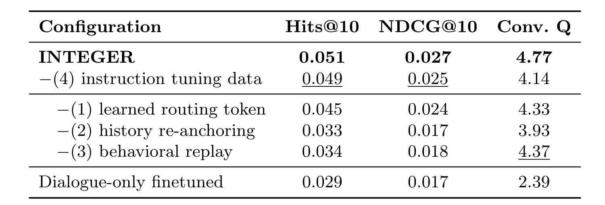
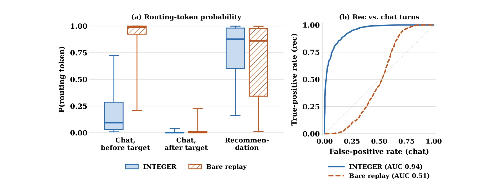
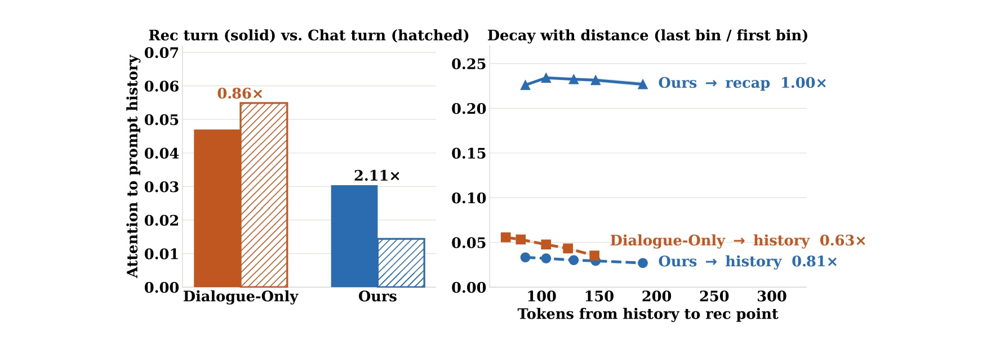
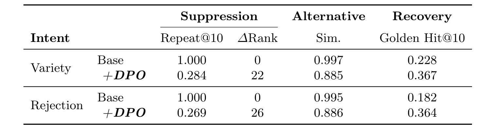

INTEGER：让生成式推荐在多轮对话中保留行为基础
论文：Adapting Generative Recommenders for Multi-Turn Interaction
作者：Yu-Chen Den、Zhi Rui Tam、Yung-Yu Shih、Shih-Hsin Wang、Yun-Nung Chen、Pu-Jen Cheng、Eugene Yang
第一作者机构：台湾大学；合作机构：约翰斯·霍普金斯大学
首次公开：2026-10-06 10:51:53 UTC；核验日期：2026-10-08
论文入口：arXiv 官方页面
代码与数据：作者表示录用后发布，本轮未核验到独立代码或项目页。
1. 背景和问题
生成式推荐从用户交互历史解码商品，却无法让用户直接纠正不符合当前意图的推荐；加入对话又可能覆盖已经学到的历史到商品映射。
这是论文摘要和引言提出的核心冲突。传统的序列推荐从点击、购买或浏览序列中归纳偏好，生成式推荐把最后一步换成商品标识符的自回归生成。这种改变让推荐和语言生成共享词表与参数，但并没有自动获得互动能力。用户告诉系统“我不喜欢这个”“想换一个相似的”，不等于系统能够把这句话纳入下一次商品预测；如果模型只接收固定历史，反馈仍必须先变成下一次点击或购买，才有机会被看到。用户已经说出的即时意图与行为日志中尚未出现的变化之间，因此存在一段延迟。
容易想到的改法是给原来的生成式推荐模型加入对话微调，让它同时说话和荐品。问题在于，说话所需的自然语言能力和根据历史预测离散商品码的能力都存储在同一组参数中。对话数据通常包含用户需求、系统答复和商品，但其数量、监督密度与行为序列不同。只训练对话可能让模型越来越像一名表达流畅的客服，却破坏已经学习过的行为到商品映射；反过来，继续大量训练推荐序列，也可能强化“收到输入就立即输出一个商品”的行为，压制等待、澄清和解释能力。论文因此研究两种能力如何相互侵蚀，而不仅是如何给推荐结果附上语言解释。
论文选择的设计原则是：对话成为既有生成式推荐器的控制层，历史行为仍然保留为荐品基础。 控制层决定什么时候推荐、怎样呈现、用户反馈后是否调整；商品预测继续利用原来的历史到标识符映射。这个表述并不意味着对话对商品完全没有影响。荐品时模型仍接收完整对话，当前表达的偏好可以参与预测；强调的是，不应把所有推荐知识都重新压缩进规模有限的合成对话训练集。已有行为学习成果需要受到保护，而不是假定语言模型凭聊天就能重建。
这种定位与两类常见方案存在具体差别。端到端会话推荐直接从对话学习偏好、商品和答复，可能缺少对多年行为序列的稳定利用。模块化方案让语言模型负责交流，另外调用推荐器取回商品，容易维护边界，但要训练或设计工具调用、管理跨模型信息传递。INTEGER 则把荐品作为语言模型内部的一种解码动作，以特殊词元触发，无需单独的路由分类器和外部推荐模型。它并没有宣称模块化方案不合理，实验也保留了模块化基线，恰恰用来检验统一模型是否真的有收益。
还要区分“学会什么时候推荐”和“学会推荐哪个商品”。前者依赖对话轮次及当前需求是否已经清晰，后者依赖行为历史与商品空间。把两件事混成一个指标会掩盖失败。例如系统每轮都给出商品，可能碰巧在目标轮命中，但用户此前会遭遇不合时宜的推销；系统每轮都友好追问，也可能获得不错的语言评分，却始终没有把正确商品交给用户。论文在目标推荐轮把未触发荐品视为未命中，同时另外分析路由概率，试图避免只用流畅度掩饰推荐失效。
第三个问题出现在用户已收到一个商品之后。拒绝和多样性请求不是完全相同的意图：拒绝可能要求离开原商品的某个属性，多样性请求则可能要求保留核心风格并寻找替代。论文通过偏好优化训练换品行为，但观察到模型最终学到统一的“不要重复当前商品”操作。这一结果很有研究价值，因为它把“反馈有作用”与“反馈语义被正确理解”分开。只要新商品和旧商品不同，并不能证明系统理解了“太贵”“换黑色”“保持同样功效”这些属性约束。
这篇工作对生成式推荐工程的启发，也应在这个准确的问题边界内阅读。它研究的是单一小型语言模型在离线合成对话上的互动适配，不是线上全链路替代方案。数据来自 Amazon Beauty 和 Toys & Games，两类商品、较短行为历史以及有限对话长度支撑了当前结论。路由、重锚定、回放和指令复习分别控制不同失效点，可以迁移为实验变量，但不能直接推定在广告、新闻流或大规模电商目录上的效果相同。尤其是用户兴趣和当前会话偏好冲突时，谁应占更高权重，论文并未给出普适的决策规则。
从整篇论文的组织看，方法简洁但分析较细。作者先把荐品动作暴露到解码流程，再让历史在荐品附近重新出现，通过训练数据混合保存两类能力，最后加偏好优化处理换品。实验围绕这些机制做拆解，最值得保留的证据不是单个百分比，而是“模型为何提前荐品”“历史为何随距离变弱”“换品为何仍无意图区分”的解释链。读完这条链，才能判断该方法到底解决了互动推荐的哪一部分，以及哪些部分仍是后续工作。
还可以从错误来源理解任务的难度。商品码预测错误可能来自历史本身的稀疏，也可能来自用户正在寻求与既往偏好不同的商品；路由错误则来自对话需求的完成度判断。用户尚未明确说出目标时，模型需要追问，但用户明确要求停止推荐时，又需要控制动作而非机械输出目录。训练集中的推荐时机标签为这些判断提供监督，却也可能把合成器偏好的对话节奏固化。论文因此不仅涉及商品表征，更涉及数据如何定义一次合适的交互。对于读者，应该同时检查金标商品和金标轮次的生成规则，只有前者可信而后者过于规则化，仍会高估模型在真实会话中的自主判断能力。
2. 方法
2.1 推荐成为解码动作与历史重锚定
设用户行为历史为 $H=(h_1,\ldots,h_T)$，到当前用户消息结束的对话为 $D_t$。每件商品先由内容编码器映射成向量，再用 RQ-KMeans 残差量化为离散码。实现中使用 sentence-t5-base，前三层各有 256 个码，第四层用于消歧，因此商品标识符是离散码序列 $z=(c_1,\ldots,c_L)$，不是自由生成的商品名称。原始推荐器的概率分解是：
符号解释：$p_\theta$ 是参数为 $\theta$ 的推荐模型，$z$ 是目标商品码，$H$ 是用户历史，$L$ 是码长度，$c_\ell$ 是第 $\ell$ 个码，$c_{<\ell}$ 是此前码前缀。这对应原文公式（1）。前缀 $c_{<\ell}$ 表示已经生成的商品码，行为历史为整条预测提供条件。推理用目录前缀树约束束搜索，只允许扩展真实商品标识符的合法前缀。这样的约束保证解码终点落在目录中，却不保证商品符合用户意图；合法性与相关性是两个不同问题。相近内容的商品可能共享更长码前缀，但量化语义是否适合复杂反馈，也仍需实验验证。
INTEGER 把历史先放入系统提示，与完整对话一起交给模型。每个助手轮开始时，模型决定下一词元：如果选择特殊路由词元 $\langle hist\rangle$，就进入荐品分支；否则继续聊天。原文算法先屏蔽除该路由词元之外的结构词元，再取最大概率词元，防止模型直接输出内部结构而绕过分支控制。进入荐品分支后，推理程序插入历史 $H$ 和 $\langle rec\rangle$，模型随后在前缀树约束下生成商品码，再恢复自由语言解码。 历史复制由程序执行，不要求模型凭记忆重写用户行为。

图中上半部分展示当前轮：需求信息不足时走聊天分支，信息足够时产生路由词元，把行为历史重新放到商品码前面。下半部分展示下一轮用户反馈沿用相同结构，推荐可在对话中被修订。虚线表示系统提示中的历史被复制到荐品位置；并不是增加一个新的推荐模型。图也说明同一个模型承担时机判断、商品生成和后续答复。历史重锚定的作用在于恢复原始推荐训练时局部的历史到商品排列，让荐品瞬间不必只依赖位于很远处的系统提示。对话仍在上下文里，所以复制历史并没有删除当前意图；它改变的是可访问性和局部格式。实现时若把历史和路由标记都交给自由生成，或者始终约束语言答复到商品词表，就会偏离图中明确区分的阶段。图里两个历史副本同时存在：系统副本支持意图理解与动作判断，邻近副本支持商品解码，复现时应保留这一双重条件。
2.2 带行为回放的对话适配
第二阶段使用三种训练来源：多轮推荐对话、原始序列推荐样本和通用指令跟随样本。对话数据教会模型路由与回应，序列样本延续历史到商品的监督，指令样本维护语言和遵循要求的能力。行为回放作用于参数更新，历史重锚定作用于解码上下文；两者保护的是不同通道，不能简单把复制历史当成已经防止遗忘。
原文公式（2）是三源混合上的标准下一词元预测损失：
符号解释：$\mathcal L_{\mathrm{SFT}}$ 是监督微调目标，$\mathbb E$ 表示对训练混合分布取期望，$i$ 是目标位置，$y_{<i}$ 是此前已生成目标词元。其中 $x$ 是输入上下文，$y$ 是参与监督的目标序列，$\mathcal D_{\mathrm{mix}}$ 混合上述来源。这里最关键的实现细节是监督掩码：推荐轮只监督路由词元、商品码和后续答复，注入的历史 $H$ 与 $\langle rec\rangle$ 被排除在损失之外。训练目标不是让模型复述每一个历史商品，而是教会它选择荐品动作，并在给定历史与对话时预测目标商品。若不掩码，长历史的复制任务可能占据大量梯度，模型学到的重点会与推理时实际承担的工作不一致。
回放样本的格式同样重要。论文讨论中的裸回放把单轮推荐作为首个、也是唯一的助手回复，这会强化“对话刚开始就推荐”的先验。INTEGER 把回放序列包在对话里，使何时推荐与会话内容相联系。因而复现不应只记录“使用了旧推荐数据”，还应保留这些样本在训练上下文中的位置和周围的对话结构。论文路由分析正是用这一差别解释两种模型在目标推荐前的巨大偏差。
2.3 利用偏好对训练商品修订
第三阶段处理用户拒绝或请求另一个相似商品。上下文 $x$ 包含历史提示、此前推荐及反馈对话。拒绝场景的负例 $y^-$ 是错误的当前第一名商品，正例 $y^+$ 是金标商品；多样性场景的负例仍是当前商品，正例则是内容向量余弦最近邻。两类样本都鼓励替换而不是重复，作者对第二阶段模型继续做 DPO：
符号解释：$\sigma$ 是逻辑函数，$\pi_\theta$ 是更新策略，$y^+$ 与 $y^-$ 分别是偏好和非偏好续写，$x$ 含反馈，$\beta$ 是更新强度。原文公式（3）以适配前参考策略 $\pi_{\mathrm{ref}}$ 为锚，鼓励正例相对概率提高、负例相对概率降低；$\beta$ 控制偏好更新强度，实验设为 0.1。公式里的相对比率限制解释尺度：训练是在已会聊天和荐品的模型上调整偏好，不是从头学习目录。由于两类偏好对没有显式属性监督，且都把“当前商品被换掉”作为共同判据，模型有充分机会学到意图无关的替换规则。后续实验证实这种风险，所以不能仅凭 DPO 中出现用户反馈，就把结果表述为已经实现细粒度语义纠错。
3. 实验结果
3.1 数据、训练与评测口径
行为数据来自 Amazon Product Reviews，Beauty 有 81,767 条交互、9,880 位用户、11,707 件商品，平均历史长度 8.28；Toys & Games 有 75,855 条交互、9,631 位用户、11,498 件商品，平均历史长度 7.88。第一阶段做 5-core 过滤并按留一法划分。第二阶段没有真实的大规模历史与对话配对数据，使用 Tencent-Hy3-preview 生成对话。Beauty 有 6,302 条轨迹、46,594 个轮次，平均轨迹长度 7.39；Toys 有 5,647 条轨迹、39,570 个轮次，平均长度 7.01。一个轮次指一条用户或助手消息，上述统计覆盖所有划分，不能把这些数字当成训练集独占规模。
推荐骨干是在 Qwen3-1.7B-Base 上实现的 TIGER。三阶段分别采用学习率 $5\times10^{-4}$、$10^{-4}$、$5\times10^{-6}$；有效批量分别是 256、128、16；训练预算为 10、5、1 个轮回。前两阶段权重衰减为 $10^{-6}$，DPO 阶段为零，各阶段预热比例都是 0.1，微调工具是 Axolotl。这样的配置说明方法在同一小模型上的适配可行，但没有提供大模型或超长历史的扩展曲线，也没有足够的吞吐、延迟与显存证据来比较线上成本。
推荐指标为 Hits@10 和 NDCG@10，在每条测试对话的金标推荐轮计算。对于 INTEGER 和允许工具调用的模块化模型，若该轮没有推荐则记作未命中，因此指标混合了路由正确性与商品检索能力。对话质量 Conv. Q 使用 DeepSeek-V4-Flash，对自然性、相关性、帮助性和连贯性各按 1 至 5 评分后取均值。这个评估能识别一定语言差别，却仍是模型评审，不等同于真实用户满意度。精度的配对检验以用户为单位并对比 TIGER；对话质量的检验以轮次为单位并对比 Modular (Tool-call)。这些检验对象不能任意替换成表中的所有最优基线。
3.2 主结果：Beauty 领先，Toys 存在取舍
为了区分精度与互动能力，作者同时比较推荐专用模型、端到端会话模型以及两类模块化方案。下表保留完整数据集分组、指标列和全部基线。

Beauty 上 INTEGER 的 Hits@10 为 0.051，较最强基线 Modular (Classic) 的 0.045 相对提高约 13.3%；绝对差是 0.006，也就是 0.6 个百分点。NDCG@10 为 0.027，高于工具调用模块化方案的 0.025；Conv. Q 为 4.77，高于其 4.58。Toys 上 Hits@10 为 0.057，只与 PECRS 持平；NDCG@10 为 0.028，低于 PECRS 的 0.032；Conv. Q 为 4.25，也低于两类模块化方案的 4.52 和 4.55。因此结果支持 Beauty 上三项指标的优势，以及两个数据集相对起始 TIGER 的精度改善，不支持所有类别和所有指标全面领先。作者报告相对 TIGER 的两项精度检验均满足 $p<0.001$，Beauty 的语言质量优于工具调用基线也达到该阈值。
其他基线揭示了任务的两端。GCRS 的语言评分并不差，Beauty 为 4.07，Toys 为 4.53，Hits@10 却只有 0.004 和 0.002，说明能聊并不等于能找对商品。PECRS 在 Toys 的排序位置质量更强，却没有最优的对话质量。模块化方案相对稳定，保留较好语言能力，也能利用原始推荐器。这些结果使统一参数方案的价值更具体：它在部分场景缓解了把语言与行为分开学习的损失，但统一本身不是压倒性的优势来源。对有严格排序要求的场景，Toys 的 NDCG 差距尤其不能被相同 Hits 掩盖。
3.3 组件消融：比较基线必须对齐
消融表有一条极容易误读的规则。去掉指令数据的第二行是三个核心组件都在的配方，后面去路由、去重锚定、去回放的三行均从该配方删一个组件，所以应对齐第二行 0.049，而不是完整模型 0.051。

去历史重锚定使 Hits@10 从 0.049 降到 0.033，相对下降约 32.7%；去行为回放降到 0.034，相对下降约 30.6%。去学习路由词元降到 0.045，相对下降约 8.2%。这说明复制上下文与保存参数中的行为映射都很重要，两者的终点相近却不意味着可以相互替代。只用普通多轮对话微调的最后一行更差，Hits@10 为 0.029，Conv. Q 为 2.39。完整模型加入指令数据后 Hits 从 0.049 到 0.051，而质量从 4.14 到 4.77，质量改善 0.63 分更醒目。去回放行的质量是 4.37，高于核心配方 4.14，也说明行为训练可能损伤语言能力，指令复习承担了恢复作用。
各变体按自己训练时的输入格式评估，因此这里并非固定输入格式下的纯参数干预。重锚定变体改变了模型看到历史的位置，路由变体改变了动作表达方式；这些差别正是方法的一部分，但因果解释应限定为完整训练和输入配方的贡献，不能把表中百分点直接归因于某一注意力头或单一词元向量。论文没有展示所有组件的全因子组合，三个组件之间是否存在更多交互仍有研究空间。
指令数据比例扫描补充了同一判断。对话质量在从零增加到约 10% 时明显提高，随后趋于平台，变化幅度约为 0.5 至 1.2 分；Hits@10 随比例并不单调，而且两个数据集的最佳点不同。因而不能把“多混一点指令数据”当成普适公式。比较有用的启示是，把自然语言能力当成需要独立监测的保留目标，同时跟踪商品排序，寻找适合具体类别的混合比例。
3.4 路由与历史关注：两个机制证据
裸回放与 INTEGER 使用相同的对话，差别是前者把回放荐品作为单轮首回复，后者将回放包进对话结构。为了判断这个格式差别如何影响行为，作者对每个助手轮的路由概率做分组并绘制 ROC。

INTEGER 在应推荐轮的路由概率中位数为 0.88，在目标轮之前的聊天轮为 0.09，之后为 0.00；路由 AUC 达到 0.94。裸回放的 AUC 只有 0.51，几乎无法区分聊天与荐品，其目标前聊天轮概率中位数甚至达到 0.99，高于推荐轮的 0.86。图中差别集中在目标之前，而目标之后两者都安静。这不是“裸回放总是频繁荐品”的笼统缺陷，而是它学会了尚未收集需求就用商品开启对话。训练样本的位置决定了时机先验，给回放加上真实的会话结构因此比单纯增加旧数据数量更有针对性。ROC 描述不同阈值下的可分性，实际算法却用首词元最大概率决策，因此高 AUC 不自动等于部署触发率已达最优。
历史重锚定的分析则在荐品瞬间检查模型对历史词元的注意力，区分系统提示里较远的副本和商品码前的邻近副本。

左侧以聊天轮为参照，INTEGER 荐品轮对提示历史的注意力为其 2.11 倍，而仅对话微调模型只有 0.86 倍。右侧随着历史与荐品位置距离增加，INTEGER 远历史末首分箱比为 0.81，仅对话模型为 0.63，重锚定的相邻副本则为 1.00。图因此支持“荐品时关注历史是一种学得的行为”和“历史复制提供了不随对话长度拉远的局部通道”。但注意力是关联证据，不是商品相关性的充分证明，也不代表模型逐项正确解释了每条历史。真正结果仍要由主表和消融支撑；目前距离范围及平均短对话也不允许直接推断千轮交互或万项历史上的稳定性。左右图还测量了不同对象：左图看远端提示历史，右图同时画远端与相邻副本，不能把相邻副本的高注意力解释为模型已经增加全部历史信息量。复制并未新增行为事实，只改变同一信息的位置。
3.5 换品和案例：动作有效，语义仍不足
换品实验刻意限制在 Beauty 上可恢复的近失误情形：金标商品原本排在第 2 至 50 名，当前第一名不正确。每个意图用三种表面措辞，衡量拒绝商品的重复率和排名移动、替代商品与旧商品的向量相似度，以及金标是否进入前十。

基础模型在两类反馈下 Repeat@10 都是 1.000，排名移动都是零，几乎总重提旧商品。DPO 后，多样性请求的 Repeat@10 为 0.284，拒绝为 0.269，旧商品分别后移 22 和 26 位；金标前十恢复从 0.228 到 0.367，以及从 0.182 到 0.364。改进是真实的重复抑制与近失误恢复，却仍不是完整偏好满足。替代相似度分别为 0.885 和 0.886，几乎一样。对于“另一个相似的”和“我不要这个”，模型并没有呈现明显不同的距离行为。相似度越低也不自动越好：多样性可能要求保留主要特征，拒绝可能只改变价格或颜色。不能用一个统一的距离变化替代属性级正确性。
这项评测本身也比一般在线拒绝问题更容易恢复，因为金标已在原列表靠前位置。用户拒绝的真实原因可能根本不在候选集覆盖的空间中，也可能是目录信息不完整。论文自己明确把属性级反馈列为下一步，当前正负对构造均鼓励替换旧商品，并没有让不同属性约束对应不同正确答案。因此较合理的结论是 DPO 解锁了一个有效动作，而动作语义还粗。
最后一个案例把路由统计转成可读的会话过程。
用户起初只说随便看看，随后提到此前喜欢的油类产品，第三轮才提到粉底容易斑驳。裸回放从第一轮起就连续给商品，INTEGER 先问产品类型，再问皮肤或身体方面的需求，到第三轮才推荐。这个案例清楚解释了图 2 中目标前误触发的意义：等待是为了得到更完整的需求，而不是把推荐失败包装成闲聊。不过案例右侧的最终商品也不能证明已经满足粉底斑驳这一具体问题，作者用它说明路由时机，并非展示经过真实用户确认的满意解法。案例应与总体概率和主结果合读，单个对话不足以替代全面评估。左侧和右侧的第三轮商品都由各自模型给出，案例没有展示属性核验、用户接受与购买结果。把第三轮视作金标荐品时机，是数据标注的判断；系统是否还应再问一句，也需要真实交互验证。图中措辞因此主要帮助解释为何提前推荐影响体验。
4. 总结
INTEGER 的主要贡献是把互动适配拆成三个明确位置：在输出空间里学会荐品动作，在输入上下文里恢复历史到商品的局部排列，在参数训练里用回放和指令复习保护行为与语言能力。偏好优化再使用户反馈能够触发换品。它给生成式推荐增加了一个相当简洁的互动接口，且使用三个核心公式和少量结构词元就能描述主要流程，研究收益来自训练格式和上下文位置的配合。
对工程迁移，我会优先考虑三项独立实验。第一，在现有生成式推荐器里比较会话包装回放与单轮裸回放，单独监测目标前荐品率及目标轮漏触发，避免只看整体命中。第二，对真实长历史测量邻近历史复制的成本与效果，比较全量复制、压缩历史和选段复制；论文没有证明压缩方案有效，所以应作为新变量检验。第三，分别扫描行为回放与指令数据比例，同时监测商品排序和语言质量，而不假定一个固定混合比例能覆盖所有业务。上述都是由论文机制导出的复现实验设想，原文没有给出相关线上收益。
需要明确保留四个局限。 一是对话由模型合成，需求表达及金标推荐时机可能较规律，真实用户的含糊表达、转移话题和反悔尚未验证。二是语言质量由另一模型评分，缺少真人盲评与长期留存或满意度证据。三是换品在原金标第 2 至 50 名的近失误场景评测，恢复率不能推广为任意拒绝后的成功率，且不同反馈意图目前几乎得到同一种操作。四是只有两个 Amazon 类别与一个 1.7B 骨干，没有真实线上实验、完整效率对比或大规模目录扩展测试；Toys 上排序与语言指标的落后也表明收益具有场景依赖。
后续至少应跟进三件事：核验作者录用后承诺发布的代码与合成数据，尤其是回放包装、历史掩码和评审提示；用带明确价格、颜色、功效约束的反馈训练与测试，检查换品是否满足属性而不仅改变商品；加入真实用户多轮轨迹和更长历史，测量路由、排序、重复抑制与交互成本能否同时维持。还可以把路由和商品生成分开记录误差，确认某项改动到底是更会等待还是更会选品。这样才能将论文里的机制证据推进为可靠的产品判断，而不会把一个离线交互框架误写成已经验证的全场景推荐系统。
尤其应保留 Toys 的指标取舍作为复现检查项：若只重现 Beauty 的最好结果，就无法判断统一适配是否在某些类别偏向语言或命中而牺牲前列排序。把多目标收益和损失同时报告，比给框架贴上普适有效的标签更接近论文实际证据。